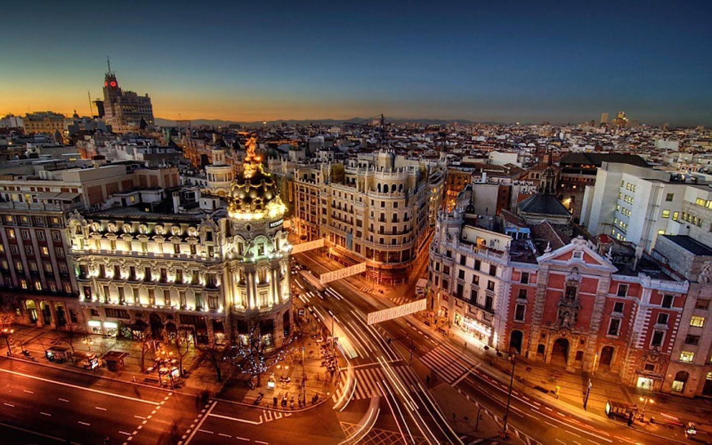
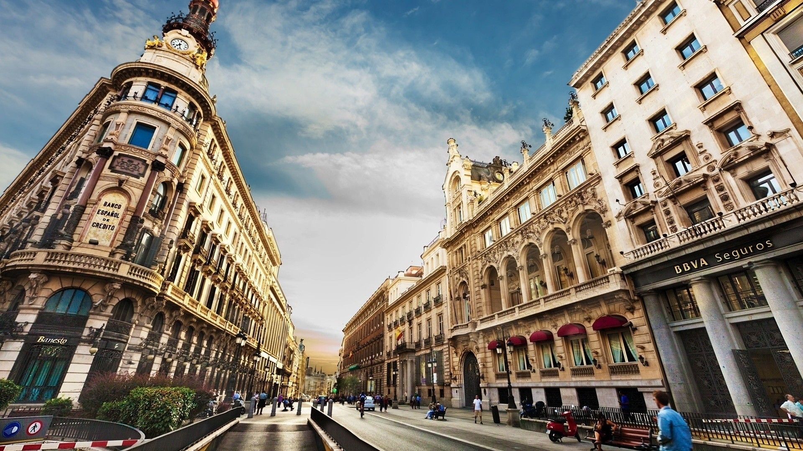
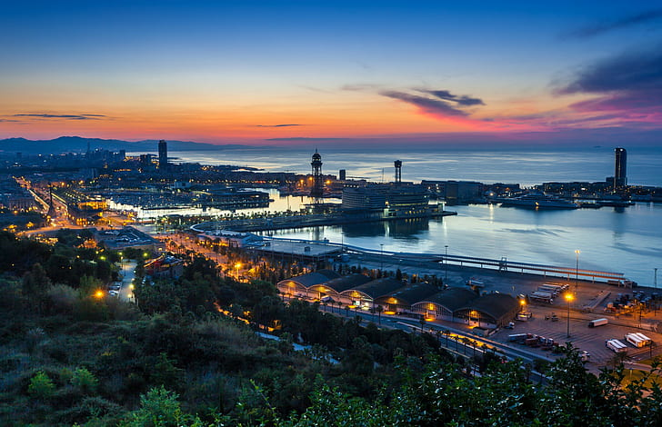

Barcelona

„Барселона е почти идеален европейски град, с почти идеално време през цялата година, мили и мили плажове, емблематични паркове, впечатляваща архитектура и колоритни квартали, които вървят в своя ритъм - артистичен, изтънчен, бохемски. Нищо чудно, че се класира в Топ 10 в нашата категория Place, която измерва както естествената, така и застроената среда на даден град “

Често гледана като на плакат за свръхтуризъм, популярността на Барселона вероятно няма да се разсее до 2021 г., особено с примамката на плажовете и емблематичните архитектурни забележителности на Гауди

Просто не забравяйте да направите резервации предварително, особено за най-големите забележителности на Барселона.